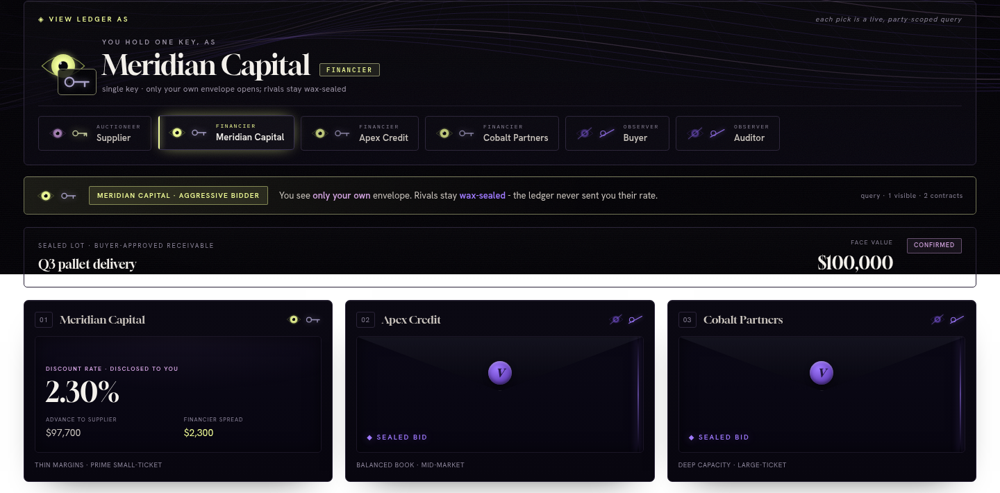

Confidential invoice financing on Canton. A supplier discounts a buyer-approved invoice to a financier, and the financier's margin is hidden from the buyer by the protocol. The ledger structurally guarantees one invoice can never be financed twice.
Invoice factoring is a 4 trillion dollar market that runs on one commercial secret: the discount rate the financier charges. Put that trade on a shared ledger and two things break.
The buyer sees what the financier earns. That is negotiating leverage against the supplier on every future invoice, and it is the reason confidential factoring stays off-chain.
The same receivable financed twice to two lenders. Classic factoring fraud. Off-chain it is caught by registries and trust, after the fact.
Encrypt it and you lose the shared truth that prevents the double pledge. Publish it and you lose the price. You need both at once.
On a public chain the sealed bid leaks through logs before the reveal, and the margin is a matter of public record. Canton's party-scoped disclosure is the product, not a feature of it.
Supplier and financier see the rate. Buyer and auditor get a redaction bar — their party view was never sent the contract.
As a financier, only your own envelope opens. Rivals stay wax-sealed. Proven by testSealedBidAuction.

The agent underwrites the receivable over only the data the financier is entitled to see. That is the point: the AI inherits the ledger's disclosure boundary, it does not reach around it.
Scores buyer payment reliability, portfolio concentration and dilution risk into a 0-100 credit score, a risk band and a recommended discount rate. 10/10 unit tests.
The agent recommends. The financier reviews and signs the resulting on-ledger offer. The rate the demo executes is the rate the agent actually recommended.
An LLM turns the structured rationale into a short memo. With no API key it falls back to a deterministic memo, so the demo never depends on a network call.
$ daml test daml/Tests.daml:setupParties: ok, 0 active contracts, 0 transactions. daml/Tests.daml:testSelectiveDisclosure: ok, 3 active contracts, 4 transactions. daml/Tests.daml:testNoDoubleFinancing: ok, 6 active contracts, 11 transactions. daml/Tests.daml:testHappyPathSettlement: ok, 4 active contracts, 7 transactions. daml/Tests.daml:testSealedBidAuction: ok, 6 active contracts, 10 transactions.
The privacy and the atomicity are real and proven. Two things are deliberately scoped, and we would rather say so than be found out.
Cash is an owner-signed bearer token standing in for a token-standard holding. The DvP atomicity is real; the cash model is not production grade. Real token-standard DvP under CIP-0056 is the stretch goal.
Listing an invoice reveals the financier's identity to the buyer. The sensitive figure, the pricing, stays hidden. Undisclosed factoring would use Canton explicit disclosure.
Everything else on these slides is running at ledgerfactor.unitynodes.com right now and reproducible from the public repo.